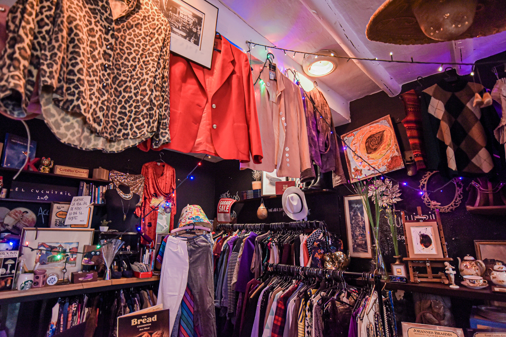

5 Formas Sencillas de hacer tu ropa mas Sostenible
Incorporar prácticas sostenibles en tu forma de vestir no tiene por qué ser complicado. A veces, los pequeños cambios hacen una gran diferencia. Aquí te damos cinco formas simples de empezar a transformar tu relación con la ropa.
1. Compra menos, pero mejor: Invierte en prendas de calidad que puedas usar muchas veces. 2. Elige fibras naturales y recicladas: Prefiere el algodón orgánico, lino o materiales reutilizados. 3. Repara antes de desechar: Un botón o un cierre no son motivo para tirar una prenda. 4. Lava menos, en frío y sin suavizante: Ahorra agua, electricidad y alarga la vida de tu ropa. 5. Apoya marcas locales y éticas: Consume de manera más consciente, conoce quién hizo tu ropa.
Ser sostenible no significa dejar de disfrutar la moda, al contrario: es redescubrirla desde otro ángulo. Es volver a valorar cada prenda como algo más que un objeto de consumo.